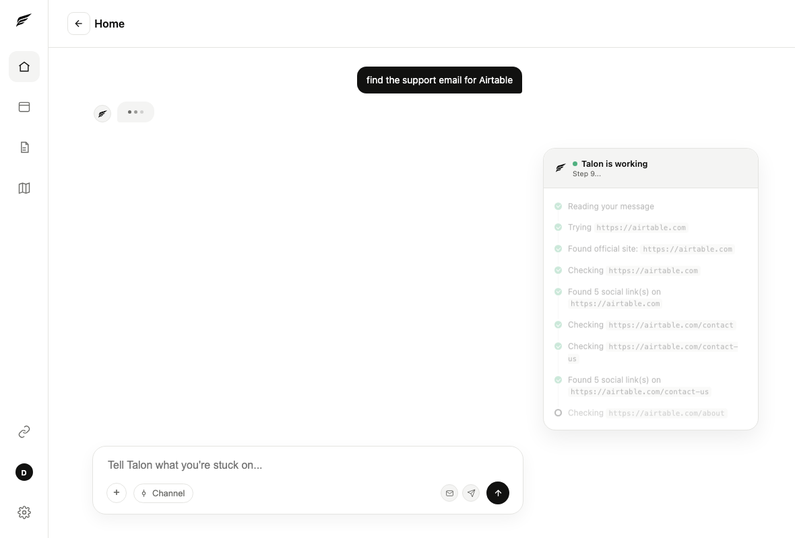
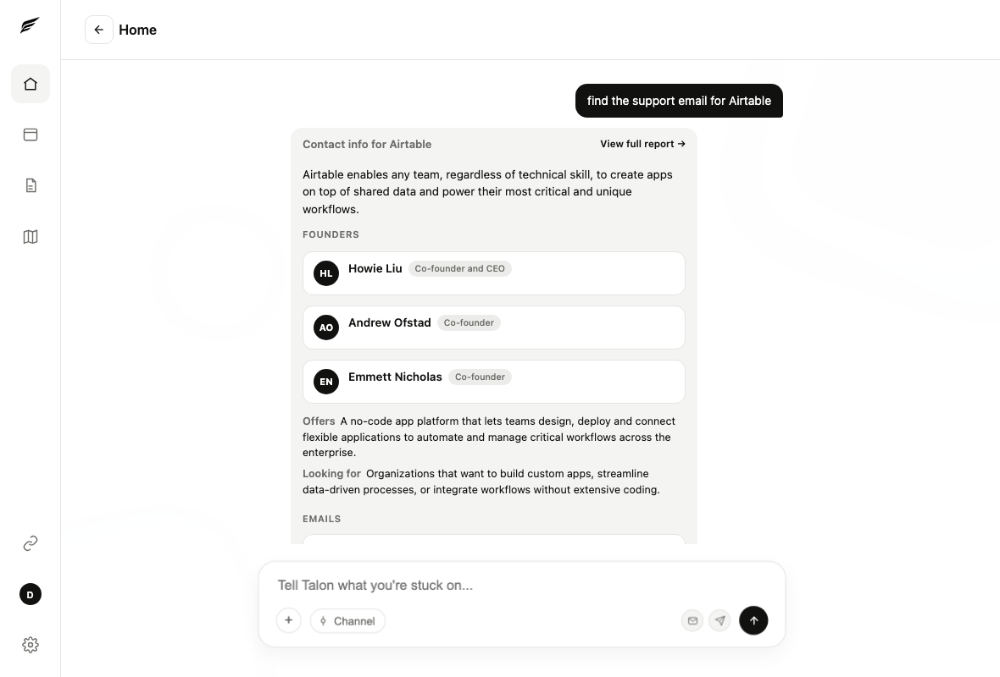
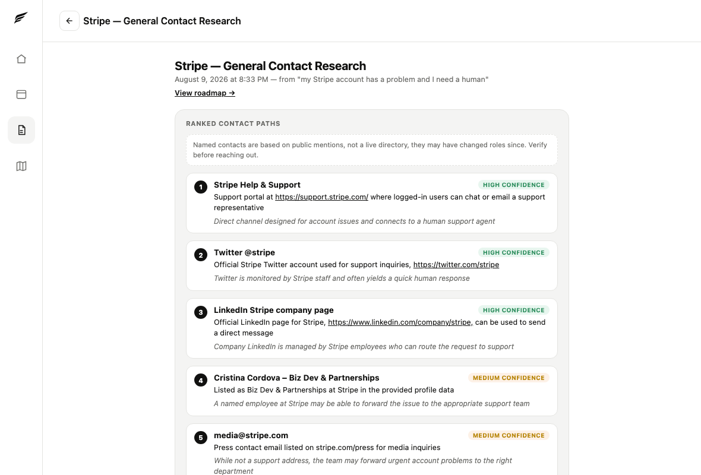
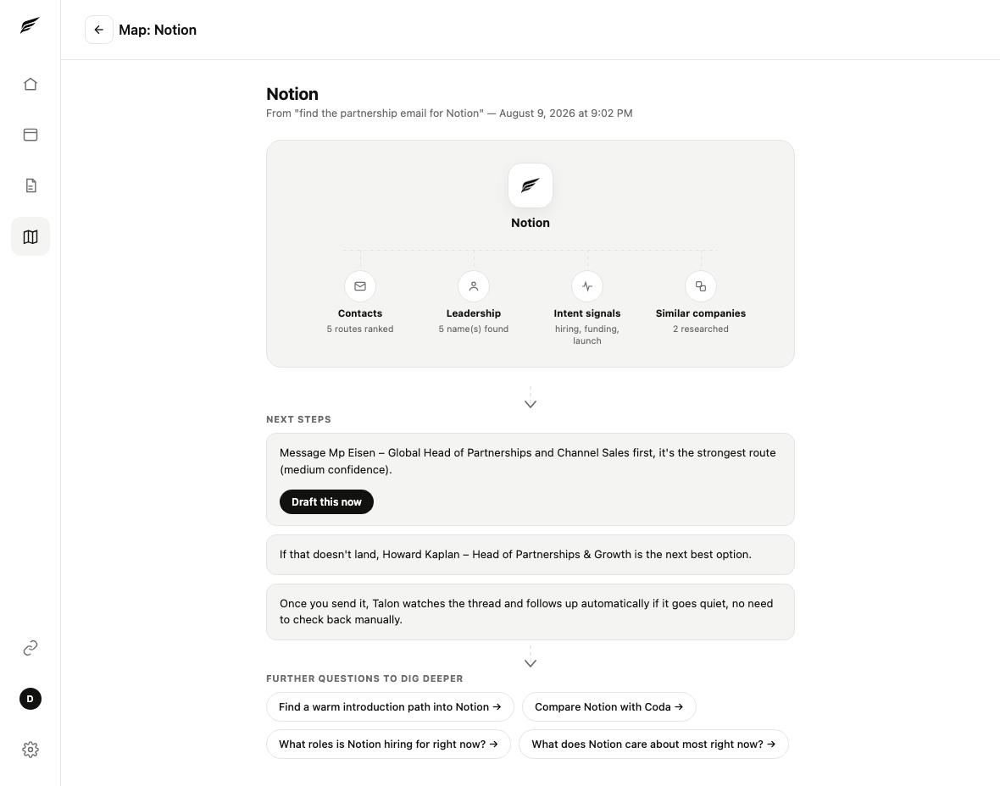

No black box. Every page it checks, every search it runs, shows up live while it works.

Founders, what they offer, who they're looking for, and every real contact route found, all in one result.

A named contact, an application, an email, a social profile, ranked by how likely each one is to actually get you a response.

The strongest move right now, what happens if it doesn't land, and questions worth asking to dig further.
